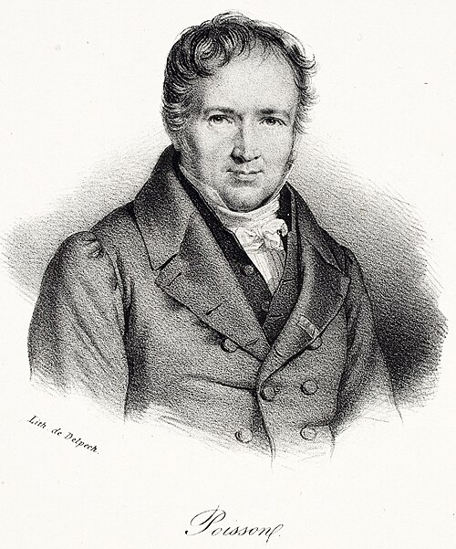

Settimana 5
Quanto bisogna aspettare?
Varianza e GeometricaLezione 1mercoledì 21 ottobre
Riepilogo · Settimana 4
Quattro domande da venerdì
1$\mathbb{E}[X]$: che cosa misura?
2Il dado dà 3,5?
3$\mathbb{E}[X+Y]$ senza indipendenza?
4Binomiale: ipotesi e media?
risposte alla lavagna
Due distribuzioni, stesso fulcro: che cosa le distingue?
Prologo · La media non basta
«Ci sono tre tipi di bugie: le bugie, le bugie maledette… e le statistiche.»
resa celebre da Mark Twain
Un solo numero può nascondere molto: anche la media.
Prologo · Quando la media ci tradisce
Chi corregge il tuo esame?
A e B hanno la stessa media: con la sola media non sapresti scegliere.
Prologo · Il biglietto di Huygens
5 euro in mano, o il biglietto?
Venerdì, con Huygens (1657): un biglietto vale il suo pagamento medio.
A · IN MANO
5 € certi
5 €
sempre
stesso
valore
B · IL BIGLIETTO
testa 10 €, croce 0 €
5 €metà 0 €, metà 10 €
Quale scegliete?
Il criterio di Huygens guarda il centro. Ma B non paga mai 5 €: paga 0 o 10.
Quanto ci si allontana dal centro? Diamogli un numero.
Prologo · Misurare la dispersione
Due pagamenti con lo stesso centro
- Stessa media: $\mu=5$ €
- Scarto dalla media: $x-\mu$
- Media degli scarti: sempre 0
- Al quadrato: $(-5)^2=(+5)^2=25$
- Media dei quadrati:
$\operatorname{Var}(B)=\color{#38ef7d}{25}$, $\;\operatorname{Var}(A)=0$
Prologo · La definizione
Varianza: la media degli scarti al quadrato
$$\operatorname{Var}(X)=\mathbb{E}\big[(X-\mu)^2\big]=\sum_x(x-\mu)^2\,p_X(x)$$
- trova la media $\mu$
- sottraila a ogni valore
- eleva ogni scarto al quadrato
- pesa con le probabilità e somma
| $x$ | $p_B(x)$ | $x-5$ | $(x-5)^2$ | contributo |
|---|
| 0 | $\tfrac12$ | $-5$ | 25 | $\tfrac{25}{2}$ |
| 10 | $\tfrac12$ | $+5$ | 25 | $\tfrac{25}{2}$ |
| somma | 25 |
Al quadrato vanno gli scarti, non le probabilità.
Prologo · Le unità
Euro al quadrato?
$\operatorname{Var}(B)=25\ \text{euro}^{\color{#ff6b6b}{2}}$
$$\sigma_X=\sqrt{\operatorname{Var}(X)}\qquad\sigma_B=\sqrt{25}=\color{#38ef7d}{5\ \text{euro}}$$
deviazione standard: torna nelle unità di $X$
- $\operatorname{Var}(X)\ge0$: è una media di quadrati
- $\operatorname{Var}(X)=0$ solo se $X$ è sempre uguale alla sua media (come $A$)
Prova: $Y$ vale 1 o 3, con probabilità $\tfrac12$ ciascuno. Media? Varianza?
Ordinare per dispersione
Stessa media, tre dispersioni
Controllo comprensione
Come va con la varianza?
- 1Ho capito e saprei rifarlo
- 2Ho capito a metà / ho dubbi
- 3Mi sono perso
Inquadra il QR · voto anonimo · risultato immediato
Esercizio 0 · gruppi di 3–4
La varianza di un dado
$X$ = faccia di un dado equo.
- $\mu=\mathbb{E}[X]$?
- $\operatorname{Var}(X)$ con la tabella degli scarti
- $\sigma_X$?
Atto I · Il 53 che non usciva
Atto I · Una probabilità per estrazione
90 numeri, 5 estratti
$$P(53\ \text{estratto})=\frac{5}{90}=\color{#38ef7d}{\frac{1}{18}}$$
a ogni estrazione, da capo
Sondaggio · la risposta arriva a fine lezione
Il 53 manca da 100 estrazioni.
Alla prossima esce con probabilità…
- 1più di 1/18
- 2esattamente 1/18
- 3meno di 1/18
- 4dipende da quante volte è uscito prima
Inquadra il QR · voto anonimo, uno per telefono
Atto II · Il modello
Lancia finché esce testa
Atto II · La PMF
$X=4$: una sola storia
$$P(X=4)=(1-p)(1-p)(1-p)\,\color{#38ef7d}{p}=(1-p)^3\color{#38ef7d}{p}$$
$k-1$ fallimenti, 1 successo
Il valore più probabile
Il Lotto: $P(X=k)$ con $p=1/18$
Controllo comprensione
Come va con la PMF geometrica?
- 1Ho capito e saprei rifarlo
- 2Ho capito a metà / ho dubbi
- 3Mi sono perso
Inquadra il QR · voto anonimo · risultato immediato
Esercizio 1 · gruppi di 3–4
Tentativi
Ogni tentativo riesce con $p=0{,}2$, indipendentemente dagli altri.
- $P(X=1)$, $\;P(X=2)$, $\;P(X=3)$?
- $P(\text{non bastano 3 tentativi})$?
- E per $k$ tentativi?
Atto II · La media
Dopo un fallimento si ricomincia
$$\mu=\color{#38ef7d}{p\cdot1}+\color{#fb923c}{(1-p)(1+\mu)}$$
$$\mu=1+(1-p)\,\mu$$
$$p\,\mu=1$$
$$\mathbb{E}[X]=\frac{1}{p}$$
Controllo comprensione
Come va con la media $1/p$?
- 1Ho capito e saprei rifarlo
- 2Ho capito a metà / ho dubbi
- 3Mi sono perso
Inquadra il QR · voto anonimo · risultato immediato
Esercizio 2 · gruppi di 3–4
Il tempo medio di un retry
Ogni tentativo: 300 ms, timeout compreso; riesce con $p=0{,}2$.
- Tentativi medi?
- Tempo medio totale?
- E con $p=0{,}5$?
Atto II · L'assenza di memoria
I fallimenti già visti spariscono
$P(X>118\mid X>100)=\dfrac{P(X>118)}{P(X>100)}$
$=\dfrac{(17/18)^{118}}{(17/18)^{100}}$
$=$
$(17/18)^{100}$$\cdot\,(17/18)^{18}$
$(17/18)^{100}$
$=\left(\tfrac{17}{18}\right)^{18}$
$=P(X>18)$
Sondaggio · rivelazione (V)
Il 53 manca da 100 estrazioni.
Alla prossima esce con probabilità…
- 1più di 1/18
- 2esattamente 1/18
- 3meno di 1/18
- 4dipende da quante volte è uscito prima
Stesso sondaggio dell'inizio: i voti sono già qui
Atto II · La fallacia del giocatore
Due domande diverse
DOMANDA A · da zero
118 assenze di fila?
0,0012
$(17/18)^{118}$
il giocatore usa
questo numero
per quella domanda
DOMANDA B · dopo 100 assenze
altre 18 assenze?
0,357
$(17/18)^{18}$
La rarità di A è già stata spesa: i 100 fallimenti sono accaduti.
Controllo comprensione
Come va con l'assenza di memoria?
- 1Ho capito e saprei rifarlo
- 2Ho capito a metà / ho dubbi
- 3Mi sono perso
Inquadra il QR · voto anonimo · risultato immediato
Domanda d'uscita
Il 53 «deve» uscire? Rispondi con un numero.
Settimana 5
Quante volte succede
una cosa rara?
Lezione 2venerdì 23 ottobre
Riepilogo · mercoledì
Quattro domande da mercoledì
1Geometrica: $P(X=3)$?
2Perché dopo un fallimento si ricomincia?
3Media per $p=1/18$?
4Assenza di memoria in una frase?
scrivila alla lavagna
Atto III · Una formula senza dati

Siméon-Denis Poisson
(1781–1840)
Recherches sur la probabilité des jugements, Parigi 1837
La domanda del libro: quanto è probabile che una giuria sbagli?
- Dentro, poche pagine su un caso speciale: moltissime prove, ciascuna quasi impossibile.
- Ne esce una formula. Per ora è solo un risultato di calcolo: nessun dato accanto.
- Nello stesso libro Poisson dà un nome a un’idea: la legge dei grandi numeri. Su moltissime prove, le frequenze si stabilizzano.
1837 · la formula
61 anni
1898 · i dati
Il libro di Bortkiewicz si intitola la legge dei piccoli numeri: anche gli eventi rari hanno una regola.
Atto III · I calci di cavallo
 Ladislaus von Bortkiewicz
Ladislaus von Bortkiewicz
(1868–1931)
Das Gesetz der kleinen Zahlen, Lipsia 1898
Sondaggio · prima di vedere la tabella
In media 0,61 morti per corpo-anno.
Su 200 corpi-anno, quanti senza morti?
- 1circa 20
- 2circa 80
- 3circa 110
- 4circa 160
Inquadra il QR · voto anonimo, uno per telefono
Atto III · Una domanda con un solo numero
Una Binomiale senza $n$ né $p$
Esercizio 3 · un valore di n per gruppo
Pezzetti di anno
Nessun morto in nessun pezzetto: $\;\left(1-\dfrac{0{,}61}{n}\right)^{n}$
| $n$ | 1 | 2 | 10 | 100 | 365 |
|---|
| $P(\text{0 morti})$ | | | | | |
Atto IV · Il numero e
Pezzetti sempre più fini
Atto IV · La previsione
Quanti corpi-anno senza morti?
$200\times0{,}5434=$
108,7
con un solo numero: 0,61
Sondaggio · rivelazione (V)
In media 0,61 morti per corpo-anno.
Su 200 corpi-anno, quanti senza morti?
- 1circa 20
- 2circa 80
- 3circa 110
- 4circa 160
Stesso sondaggio di prima: i voti sono già qui
Atto IV · I dati del 1898
Corpi-anno con zero morti
| osservati (1898) | attesi (Poisson) |
|---|
| 109 | 108,7 |
«… nichts zu wünschen übrig.»Bortkiewicz 1898, p. 25
Controllo comprensione
Come va con $e^{-\lambda}$?
- 1Ho capito e saprei rifarlo
- 2Ho capito a metà / ho dubbi
- 3Mi sono perso
Inquadra il QR · voto anonimo · risultato immediato
Atto IV · La PMF di Poisson
Da zero a un evento
$$P(1)=\color{#fb923c}{n}\cdot\frac{\lambda}{n}\cdot\left(1-\frac{\lambda}{n}\right)^{n-1}$$
$$\phantom{P(1)}=\lambda\left(1-\frac{\lambda}{n}\right)^{n-1}$$
$$\phantom{P(1)}\longrightarrow\;\lambda\,e^{-\lambda}$$
$P(X=k)=$
$\lambda^{k}$quanti eventi$e^{-\lambda}$nessun altro
$k!$ordine irrilevante
0,5434× 0,61 →0,3314× 0,61/2 = 0,305 →0,1011× 0,61/3 →?
Controllo comprensione
Come va con la PMF di Poisson?
- 1Ho capito e saprei rifarlo
- 2Ho capito a metà / ho dubbi
- 3Mi sono perso
Inquadra il QR · voto anonimo · risultato immediato
Esercizio 4 · un k per gruppo
Completare la tabella
$P(X=k)=P(X=k-1)\cdot\dfrac{0{,}61}{k}$, poi $\times\,200$
| morti $k$ | 0 | 1 | 2 | 3 | 4 | ≥ 5 |
|---|
| osservati | 109 | 65 | 22 | 3 | 1 | 0 |
| attesi | 108,7 | 66,3 | 20,2 | 4,1 | 0,6 | 0,1 |
Domanda d'uscita
GeometricaPoisson
A casa: esercizi 6 e 7 della dispensa · script 2 e 3